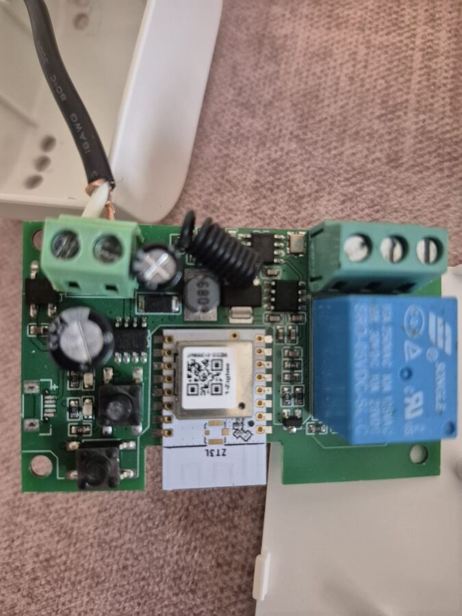

Comment j'ai remplacé mon PalGate par un relais Zigbee à $10
Le portail de mon allée s'ouvrait depuis le téléphone via un PalGate Spider-50 : un boîtier 4G avec sa propre carte SIM, qui a besoin d'un forfait data. Je l'ai retiré et j'ai mis à la place un relais Zigbee qui a coûté $10 (environ ₪37), une seule fois. Maintenant j'ouvre le portail depuis une tuile dans ZigDash, à la maison et de n'importe où.
Environ ₪770 pour un Spider-50 neuf dans les magasins israéliens, plus une SIM data à renouveler, ou environ ₪37 une seule fois pour le relais, sur le hub Zigbee que vous avez déjà.
Comment un téléphone ouvre un portail
Une carte de commande de portail a une entrée d'ouverture (ou de démarrage) : deux bornes qui ouvrent le portail quand on les relie entre elles, exactement comme le bouton d'une télécommande de portail. Le Spider est un relais avec une carte SIM. Quand l'application PalGate ou un appel téléphonique le lui demande, il relie ces deux bornes un court instant.
Un relais Zigbee fait le même travail. La seule différence, c'est qui lui dit de se fermer : votre propre passerelle Zigbee à la maison, au lieu d'une carte SIM mobile que vous continuez à payer.


Ce qu'il vous faut
- Un relais Zigbee à contact sec. Le mien est un "1 channel Zigbee/WiFi Tuya smart relay, dry contact NO/NC/COM" acheté sur AliExpress, environ $10. Il est vendu en version WiFi et en version Zigbee : choisissez Zigbee (la carte porte un module ZT3L). Il est aussi vendu pour différentes tensions d'alimentation ; j'ai pris la version AC 85–250V.
- Le contact sec, c'est le point important. Un contact sec est un simple interrupteur sans tension propre : il relie seulement COM à NO, exactement comme le bouton d'une télécommande. Un relais qui envoie de la tension sur ses bornes (le genre fait pour allumer une lampe) peut endommager l'entrée de la carte de commande du portail. Cherchez "dry contact" et des bornes marquées COM, NO et NC.
- Une passerelle Zigbee2MQTT à la maison qui atteint le portail. J'en avais déjà une (une SMLIGHT SMHUB) pour le reste de la maison. Sinon, consultez Passerelles.
- ZigDash sur votre téléphone (Google Play ou App Store). Ouvrir le portail à la maison est gratuit. L'ouvrir de n'importe où passe par le contrôle à distance de ZigDash Pro : un achat unique, sans abonnement.

1. Appairer le relais avec ZigDash
Appairez-le d'abord à la maison, sur la table, avant qu'il n'aille dans le coffret du portail.
- Alimentez le relais.
- Dans ZigDash, ouvrez Appareils et touchez Lancer l'appairage.
- Maintenez le bouton du relais enfoncé jusqu'à ce que sa LED clignote. Il passe alors en mode appairage.
- ZigDash affiche Prêt avec le nouvel appareil. Renommez-le Portail.
Allumez-le et éteignez-le plusieurs fois et écoutez le clic du relais.
2. Retirer le Spider
- Repérez les deux fils qui vont de la sortie relais du Spider (COM1 et N.O.1) à l'entrée d'ouverture de la carte de commande du portail. Marquez-les.
- Dévissez le bornier du Spider et débranchez l'alimentation du Spider.

3. Câbler le relais
- Sortie : les deux fils de l'entrée d'ouverture vont sur les bornes COM et NO du relais. Laissez NC libre. Sur un contact sec, l'ordre n'a pas d'importance.
- Alimentation : la version AC 85–250V se branche directement sur le secteur, comme un chargeur de téléphone : deux fils, phase et neutre, depuis l'alimentation 230V du portail.
- Refermez le boîtier du relais, placez-le à l'abri de l'humidité, et réenclenchez le disjoncteur.
4. Une tuile Portail dans ZigDash
- Sur votre tableau de bord, touchez Ajouter depuis un appareil et choisissez Portail.
- Touchez la tuile : le relais se ferme et le portail se met en mouvement, comme avec la télécommande.
- L'entrée d'ouverture du portail attend un appui court, comme un bouton de télécommande ; le Spider ferme son contact 2 secondes par défaut. Beaucoup de relais à contact sec ont un mode impulsion (inching) qui se coupe tout seul : si Zigbee2MQTT l'affiche pour votre relais, réglez-le sur environ 2 secondes, et chaque appui sur la tuile sera un appui sur le bouton. Sinon, éteignez la tuile après une ou deux secondes. Un contact qui reste fermé peut compter comme un appui long, ce qui sur certains portails veut dire arrêt ou rester ouvert.
- De n'importe où : avec ZigDash Pro, activez le contrôle à distance et la même tuile fonctionne loin de la maison, sans port ouvert sur votre box et sans abonnement mensuel. Il fonctionne sur cinq téléphones au maximum ; Partager avec un autre téléphone ajoute les téléphones de la famille avec un seul QR code.
Ce à quoi vous renoncez
Pour être juste envers le Spider, il fait des choses qu'un relais Zigbee ne fait pas :
| PalGate Spider | Relais Zigbee + ZigDash | |
|---|---|---|
| Coût | Environ ₪770 neuf (prix en magasin), plus une SIM data | Environ ₪37 une seule fois ; le contrôle à distance est un achat unique de ZigDash Pro |
| Connexion | Sa propre SIM 4G, plus le Bluetooth pour ouvrir près du portail : fonctionne même quand la maison n'a pas internet | Votre passerelle Zigbee à la maison ; hors de la maison, il faut l'internet de la maison |
| Façons d'ouvrir | Application, appel, automatiquement en arrivant, Apple CarPlay et Android Auto, Siri, Google Assistant, Apple Watch | Une tuile, des scènes et des automatisations dans ZigDash (et Home Assistant, si vous l'utilisez) |
| Qui peut ouvrir | Jusqu'à 50 utilisateurs sur le Spider-50, gérés dans l'application PalGate, chacun avec un horaire ou « à proximité seulement » ; ils peuvent aussi ouvrir par un appel | Les téléphones avec lesquels vous partagez la maison (jusqu'à cinq à distance) |
| Ouvert ou fermé | Une entrée pour un capteur magnétique, avec notifications | Ajoutez un capteur d'ouverture Zigbee (environ 10 $) et voyez-le dans ZigDash |
| Cloud | Le service de PalGate | Aucun à la maison ; à distance, tout passe par le serveur relais de ZigDash, chiffré de bout en bout |
Quand garder le Spider
Pour une maison individuelle où la famille ouvre un seul portail, le relais fait tout ce dont j'avais besoin. Le Spider reste le meilleur choix quand :
- Beaucoup de personnes ouvrent le portail : un immeuble, des voisins, une aide ménagère, des invités. Le Spider-50 accepte jusqu'à 50 utilisateurs avec horaires, et ils peuvent ouvrir par un appel.
- Le portail est loin de la maison, hors de portée de votre réseau Zigbee, même avec un appareil entre les deux. La distance ne gêne pas la 4G.
- Le portail doit s'ouvrir même si votre passerelle ou l'internet de la maison est en panne. Le Spider a sa propre connexion, et le Bluetooth près du portail.
- Vous voulez qu'il s'ouvre tout seul en arrivant, avec Apple CarPlay ou Android Auto.
Ou gardez les deux. Branchez COM et NO du relais sur la même entrée d'ouverture que le Spider. Ils fonctionnent comme deux boutons pour le même portail : les voisins gardent leur PalGate, et vous avez le portail dans vos scènes ZigDash.